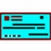
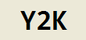

Lista cronológica de realizaciones
- Lista cronológica de realizaciones
- 2016 ~ 2017 Desarrollo de un microservicio para JPMorgan, en Globant
- 2012 ~ 2013 Soporte de producción al sistema F&E de Verizon, en Globant
- 2011 Sentinel: software para control de test cases, en Globant
- 2011 Proyecto "Prueba Piloto Telecom", en Globant
- 2011 Filtro de infracciones de vehículos exceptuados, para Boldt S.A.
- 2010 Portal de Cafam, en Globant
- 2006 ~ 2007 OAG Sequence & Load de OAG, en Globant
- 2005 Boldt - Impresión de padrones electorales
- 2005 Boldt - Facturación de personalizado de cheques
- 2003 ~ 2005 Boldt - Personalizado de cheques
- 1999 ~ 2001 Informatización de Caminos del Río Uruguay S.A.
- 1998 Contratos de compra de cosechas y exportación de cereales, Nenuca S.A.
- 1999 Y2K
- 1998 Faro Buenos Aires, venta de CDs online
- 1980 ~ 2010 Lautrec, Bertrán , ...
- 1978 Análisis de costos, para Armetal S.A.
- Brevísima historia
2016 ~ 2017 Desarrollo de un microservicio para JPMorgan, en Globant
 Desarrollo de un microservicio de perfiles de usuarios y clientes para la aplicación global de
trading internacional del banco que opera miles de millones por día.
Desarrollo de un microservicio de perfiles de usuarios y clientes para la aplicación global de
trading internacional del banco que opera miles de millones por día.
Mi trabajo como Business Analyst fué la gestión del backlog usando Jira, en un proceso "agile", para un team de unos 10 o 12 developers.
El microservicio fué desarrollado en Java, para operar en los servidores UNIX del tier 3 del banco.
Es el tipo de aplicación crítica que si falla el banco pierde millones de dólares por minuto. Completamos el trabajo y entramos en producción exitosamente.
2012 ~ 2013 Soporte de producción al sistema F&E de Verizon, en Globant
 Integré, como programador, el equipo que hace soporte de operaciones global al sistema "F&E"
que aprovisiona y factura líneas punto-a-punto mundialmente, unos miles de millones de
dólares.
Integré, como programador, el equipo que hace soporte de operaciones global al sistema "F&E"
que aprovisiona y factura líneas punto-a-punto mundialmente, unos miles de millones de
dólares.
El sistema corre en mainframe, y está desarrollado en "CA Ideal", un 4GL similar al COBOL. Aprendí el idioma y pude usarlo con éxito.
Además, por iniciativa propia, automaticé unos reportes repetitivos para pasar de dos horas diarias a 10 minutos, con calidad mejorada, usando VBA en Excel.
2011 Sentinel: software para control de test cases, en Globant

Participé en el desarrollo de una herramienta para administrar test cases, llamada Sentinel, y estaba planeado que una vez que funcionara se publicaría en modo open source.
Me incorporaron al proyecto como BA por mis conocimientos de usabilidad: la aplicación está destinada a ser usada por centenares de testers durante jornadas completas, por lo tanto cualquier ganancia en usabilidad (eficiencia, eficacia, satisfacción) tiene un impacto significativo en el costo operativo y la calidad de los proyectos donde se la use.
Finalmente me apropié del proyecto, haciendo la inducción y el management de los developers, es decir, actuando como PM Project Manager.
De las entrevistas que tuve con testers (actuando como FA) deduzco que aplicación resultante iba a tener un nivel de usabilidad excelente.
2011 Proyecto "Prueba Piloto Telecom", en Globant
El proyecto consistió en migrar algunos programas y jobs aislados del sistema de facturación de Telecom Argentina, en COBOL, a la plataforma Micro Focus.
Los programas elegidos por Telecon fueron los más complejos. Algunos tenían más de 50.000 líneas de código.
Mi trabajo fué hacer el inventario de las aplicaciones adicionales necesarias, la migración del JCL, escribir varios programas utilitarios para emular funciones de Control-M, adaptación de programas COBOL, y editar la memoria técnica que se le entregó al cliente
2011 Filtro de infracciones de vehículos exceptuados, para Boldt S.A.
 Boldt opera el sistema de infracciones de tránsito de la
Provincia de Buenos Aires. Para ese sistema me encomendaron una aplicación que filtre las
infracciones de los vehículos exceptuados (ambulancias, patrulleros, ... ).
Boldt opera el sistema de infracciones de tránsito de la
Provincia de Buenos Aires. Para ese sistema me encomendaron una aplicación que filtre las
infracciones de los vehículos exceptuados (ambulancias, patrulleros, ... ).
Como la aplicación procesa grandes cantidades de información crítica, y esta etapa de filtrado es operada por personal posiblemente sin capacitación, debe tener alta usabilidad. Me contrataron por que saben que soy capaz de lograr ese objetivo.
A la fecha, luego de varias semanas en producción, no ha habido ningún reclamo, nada. Es señal de éxito: cero defectos.
2010 Portal de Cafam, en Globant
 El
cliente, una organización grande equivalente a las cajas de subsidios familiares de Argentina pero
con valor agregado, quería una aplicación que expusiera su oferta (hotelería,
turismo, seguros, supermercados, educación, deportes, ...) a través de artículos similares a los
de las revistas dominicales de los diarios, seleccionados en base a las necesidades del afiliado
en cada caso (satisfactores).
El
cliente, una organización grande equivalente a las cajas de subsidios familiares de Argentina pero
con valor agregado, quería una aplicación que expusiera su oferta (hotelería,
turismo, seguros, supermercados, educación, deportes, ...) a través de artículos similares a los
de las revistas dominicales de los diarios, seleccionados en base a las necesidades del afiliado
en cada caso (satisfactores).
Obtuvo una aplicación considerada web 2.0, que superó sus expectativas. En este proyecto participé como experto en usabilidad, diseñador de interacción, y analista funcional.
En mi diseño hay una oferta de artículos, todos publicados por Cafam, que compiten para aparecer en el browser de los clientes que entran al portal. La competencia es en base a un matching entre las propiedades del artículo, las del usuario, y los ítems del menú que el usuario picó. Cada artículo tiene una política de devaluación de interés que se fija al publicarla con un par de mouse clicks, de modo que la información más añeja vaya dejando espacio a lo nuevo.
El buen diseño de la aplicación contribuyó en gran medida a que finalmente el proyecto resultara exitoso.
2006 ~ 2007 OAG Sequence & Load de OAG, en Globant
 Era un proyecto grande de migración de un sistema en mainframe con archivos VSAM a Java en AIX
con DB2.
Era un proyecto grande de migración de un sistema en mainframe con archivos VSAM a Java en AIX
con DB2.
Mi trabajo, como Senior DB2 Developer, era hacer funcionar unos scripts en SQL, stored procedures de varios miles de líneas de codigo.
El proyecto estaba trabado por algunos de esos scripts. Mi trabajo fué hacerlos funcionar correctamente, con performance aceptable.
Por ejemplo scripts que se caían a las 30 horas pasaron a terminar correctamente en 20 minutos. Además del tamaño de las SPs, el el problema era la complejidad.
2005 Boldt - Impresión de padrones electorales
Boldt imprimió los padrones para las elecciones nacionales de 2005, unos cuarenta millones de hojas. Una tarea previa a la impresión es la captura de los archivos de los 24 distritos (votantes, mesas, escuelas, etc...) que se hace dos veces, para los padrones provisorios y para los definitivos.
El Ministreio del Interior había comunicado quejas de los representantes de algunas provincias, por la demora que hubo para la captura de los padrones provisorios.
Para resolverlo diseñé y desarrollé, en tiempo record, una aplicación tan satisfactoria que Boldt terminó con una carta de felicitación del Ministerio.
Una parte fundamental de esa aplicación fué la interfase de usuario, que se podía operar con seguridad casi sin entrenamiento. La aplicación aprendía y recordaba las acciones del usuario entre sesiones, de modo que si el proceso de un distrito debía rehacerse, la vez siguiente se hacía mejor.
La aplicación estaba escrita con VB6 y Access, los reports se "imprimían" en HTML.
2005 Boldt - Facturación de personalizado de cheques
Diseñé e implementé una aplcación para reemplazar la existente.
Se trata de un proceso de facturación que incluye el detalle de cada una de las libretas de cheques que los bancos ordenaron durante todo un mes.
El proceso anterior tomaba cuatro días de una persona especializada.
Con la nueva aplicación de alta usabilidad, el proceso completo se realiza en un par de horas sin errores.
Además, se eliminó la impresíon de miles de hojas, reemplazadas por archivos Excel generadas automáticamente por la aplicación, desarrollada con VB6, VBA y Access.
Fué una iniciativa mía, después que me pidieran que corrija unos defectos del sistema anterior.
2003 ~ 2005 Boldt - Personalizado de cheques
Boldt provee chequeras personalizadas con los datos de cuenta, numeración, sucursal, etc, a los principales bancos del país. Se imprimen millones de cheques por mes.
Durante mi participación la calidad mejoró de 12 defectos por año, a casi cero.
Uno de los factores significativos de la mejora fué la interfase de usuario que implementé para los programas de captura de los pedidos. Esta interfase es operada por personal de fábrica que no necesariamente tiene altas calificaciones, durante la noche.
1999 ~ 2001 Informatización de Caminos del Río Uruguay S.A.
CRUSA es una excelente empresa de construcción de caminos, que carecía de política y práctica de sistemas informáticos. Construye y explota la autovía de Zárate-Brazo Largo a Paso de los Libres.
Diseñé e implementé parcialmente (hasta la crisis del 2000) un sistema de gestión que era un puente entre el área técnica y el área administrativa, integrando la información de ambas. Cuando el proyecto se suspendió por la crisis había instalado un módulo Transporte de Materiales que fué muy exitoso.
Reducía a minutos algunas tareas que antes tomaban días.
Los usuarios eran ingenieros, capataces y administrativos de obra, con gran conocimiento del dominio pero poco de la informática.
Era una aplicación cliente-servidor desarrollada con VB6 y DB2 en el backend.
1998 Contratos de compra de cosechas y exportación de cereales, Nenuca S.A.
Implementé la complejidad de los contratos de compra de cosechas para exportación, en una aplicación simple de utilizar.
Esta aplicación tenía usuarios extremos, gente de 60 ó 70 años con cero experiencia informática, y gente muy joven con solvencia total. Diseñé una interfase especial satisfactoria para todos. La aceptación de los usuarios fué notable, de modo que continué diseñando aplicaciones de escritorio con esa misma interfase.
1999 Y2K
El trabajo de este año fué especial, por las reparaciones del software para el año 2000. Algunos clientes necesitaron servicio: AMSA (Met Life), NOBLEX, Editorial La Ley (Thompson Publishing) y otros.
Luego de analizar las herramientas que ofrecía el mercado, especialmente IBM, hice una propia. El problema era la usabilidad: casi era más fácil hacer el trabajo a mano que usarla esas aplicaciones.
Usando la herramienta propia entregamos todos los trabajos en tiempo y en forma, sin defectos, y sin necesidad de esfuerzos heróicos.
Desde que empecé a trabajar con computadoras desarrollé herramientas, para uso propio o para los demás. Eso me influyó: pensar las aplicaciones como herramientas para que los usuarios puedan concretar sus objetivos es la manera de hacerlas usables. Se llama User Centered Design.
1998 Faro Buenos Aires, venta de CDs online
Era un sitio típico de venta de CDs musicales online. A partir de mi participación en este sitio como webmaster empecé a participar en el ambiente de la usabilidad y el diseño de interacción, y a estudiar el tema regularmente.
Llevé la interfase de usuario a un nivel completamente aceptable de usabilidad. Yo recibía los emails de los usuarios con dificultades, e implementaba los cambios necesarios para que esos problemas no se repitieran, hasta que la cantidad de problemas se redujo a un número insignificante.
1980 ~ 2010 Lautrec, Bertrán , ...
En 1979 convencí a un cliente, una empresa constructora mediana, para que me encargara software interactivo para sus sistemas más críticos, la liquidación de haberes y la gestión administrativa. En esa época lo normal era trabajar con listados, de cientos de páginas.
En 1980 los sistemas estaban en producción, y se usaron durante unos 25 años en ese cliente inicial; en 2010 todavía están en uso en un par de lugares (pagan para usarlos).
Durante mi relación con esos clientes aprendí mucho sobre los usuarios y la manera en que interactúan con las interfases de los sistemas. Especialmente, aprendí cómo hacer interfases que sean satisfactorias desde el primer día.
Otro aspecto interesante fué la eficiencia de mis sistemas. Lautrec Publicidad, y Distribuidora Bertrán, son dos de los clientes que usaron mi software de gestión y mientras lo usaban crecieron multiplicando su volúmen de operación por 7 y por 4, respectivamente. En ambos casos luego del crecimiento tenían mucho mejor información que al comienzo, con menor cantidad de personal en el área administrativa. A partir de esos indicios, y de muchos otros, me fuí percatando de que las cosas hechas por mí eran mejores que el promedio del mercado. Tardé años para percatarme, por que al no existir la Internet no tenía manera de comparar.
1978 Análisis de costos, para Armetal S.A.
Armetal S.A., actualmente Dana Argentina, hace autopartes. En épocas de inflación negocian los aumentos de precios justificándolos con un análisis del impacto de los aumentos en los insumos (mano de obra, acero, etc...).
Como la vigencia de los aumentos es a partir del momento en que Ford recibe la solicitud, trabajaban sin dormir o durante los fines de semana para presentar las planillas lo antes posible.
Me encomendaron el desarrollo de un sistema para la nueva computadora que habían adquirido, una IBM con terminales. Este fué mi primer software interactivo. Pasaron de trabajar días a trabajar horas. El ROI fué impresionante: amortizaron todo el costo del desarrollo con el primer camión de mercadería que llegó a Ford luego de la presentación de los análisis de costos.
Brevísima historia
Entre 1974 y 2001 lideré mi propia organización de desarrollo de software, vendiendo o alquilando licencias a algunos clientes selectos como XEROX, Techint, AMSA, Bonafide, NOBLEX, Editorial La Ley y otros.
En 2001 me quedé casi sin clientes. Los que no habían sido comprados por multinacionales desaparecieron por causa de la crisis, de modo que trabajé dentro de empresas. En 2006 me llamaron de Globant donde comencé a trabajar inmediatamente y continué durante 10 años hasta que me jubilé en agosto 2017.